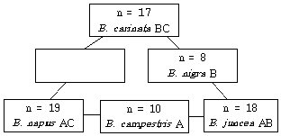
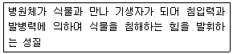
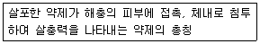

종자기사 (2008-07-27 기출문제)
1과목: 종자생산학
1. 다음 중 근교약세(내혼약세)가 가장 작은 채소는?
- 수박
- 당근
- 양파
- 양배추
(정답률: 알수없음)

2. 종자의 표준발아검사 기준에는 작물별로 발아기준이 다르게 규정되어 있다. 특별히 규정되어 있지 않은 사항은?
- 치상재료
- 온도조건
- 수분조건
- 치상조건
(정답률: 알수없음)
3. 감자 원종포 포장검사에서 각 검사항목 최고한도는?
- 이종종자수 0%, 모자익바이러스 0.3%, 엽권바이러스 0.5%
- 이종종자수 0%, 모자익바이러스 0.3%, 엽권바이러스 1.0%
- 이종종자수 0%, 모자익바이러스 1.0%, 엽권바이러스 0.5%
- 이종종자수 0%, 모자익바이러스 1.0%, 엽권바이러스 1.0%
(정답률: 알수없음)
4. 다음 중 종자 휴면의 주요 원인이 산소를 통과시키지 않는 종피에 의해서 발생되는 작물은?
- 콩
- 사과
- 도꼬마리
- 인삼
(정답률: 알수없음)
5. 포자에서 채종 재배시 격리거리가 가장 가까운 작물은?
- 배추
- 고추
- 양파
- 상추
(정답률: 알수없음)
6. 오이의 성 표현과 관계가 없는 생장 조절제는?
- 지베렐린(GA)
- 초산은(AgNO3)
- 에스렐(Ethrel)
- 인돌초산(IAA)
(정답률: 알수없음)
7. 종자의 건조에 관한 설명으로 틀린 것은?
- 수확한 종자는 곧 충분히 다시 말려야 한다.
- 맑은 날에는 햇볕 아래 펴서 말린다.
- 비가 올 때에는 종자를 건열소독 할 때의 온도로 건조시킨다.
- 마대에 넣어야 할 때에는 반 정도 넣어서 공기가 잘 통하게 해 준다.
(정답률: 알수없음)
8. 종자의 표준 발아검사시 치상하는 종자수와 검사횟수는?
- 10립씩 2반복
- 50립씩 2반복
- 100립씩 2반복
- 100립씩 4반복
(정답률: 알수없음)
9. 종자세(seed vigour)와 발아능(seed viability)의 관계 설명으로 틀린 것은?
- 발아능은 묘의 출현 속도와 균일성에 대한 능력이다.
- 종자의 퇴화가 진행되면 종자세의 저하는 발아능의 저하보다도 앞서 진행한다.
- 종자의 퇴화정도는 종자세와 발아능의 차이라고 할 수 있다.
- 종자세는 퇴화과정 중에 일어나는 측정 가능 요소를 정량적으로 도출하여 검사한다.
(정답률: 30%)
10. 병충해의 물리적 방제법에 속하는 것은?
- 저항성 품종의 선택
- 약제 살포
- 담수
- 천적이용
(정답률: 알수없음)
11. 개화를 유도하는 화학물질이 아닌 것은?
- IAA
- NAA
- Cytokinin
- MH
(정답률: 77%)
12. 종자의 약제소독방법 중에서 대량처리시 흡인할 염려가 있으므로 작업장에 환기장치가 필요한 처리는?
- 액제(liquids)
- 분제(dusts)
- 도말(slurry method)
- 환약(pelleting)
(정답률: 알수없음)
13. 종자는 알맞은 등숙단계에서 채종되어야 한다. 십자화과 작물의 채종적기는 언제인가?
- 백숙기
- 녹숙기
- 갈숙기
- 고숙기
(정답률: 알수없음)
14. 감자의 휴면을 타파하고 최아하는 가장 효과적이고 간편한 방법은?
- 절단한 감자를 지베렐린 2ppm에 30 ~ 60분간 침지
- 절단한 감자를 에틸렌크로로하이드린 50%용액에 15분간 침지
- 절단한 감자를 0.51%의 과산화수소에 1시간 침지
- 1ppm의 에틸렌 가스에 밀봉 처리
(정답률: 알수없음)
15. 미숙기에 수확한 종자의 발아능 획득에 후숙의 효과가 가장 큰 것은?
- 과채류
- 근채류
- 엽채류
- 곡실류
(정답률: 알수없음)
16. 종자의 휴면에는 자발휴면과 타발휴면이 있다. 자발휴면에 포함되지 않는 것은?
- 생리적 휴면, 미숙 배
- 미숙에 의한 휴면, 종피에 의한 휴면
- 종자 휴식, 기계적 저항에 의한 휴면
- 배 휴면, 억제물질에 의한 휴면
(정답률: 60%)
17. 옥수수에서 배유의 유전자 조성에 따른 발아율이 높은 것에서 낮은 순서로 배열된 것은?(단, Su는 우성유전자이다.)
- SUSUSU → SUSUsu → SUsusu → sususu
- SUsusu → SUSUsu → SUSUSU → sususu
- sususu → SUsusu → SUSUsu → SUSUSU
- SUSUsu → SUsusu → SUSUSU → sususu
(정답률: 알수없음)
18. 다음 중 유전적 종자퇴화가 아닌 것은?
- 자연교잡
- 돌연변이
- 이형유전자의 분리
- 온난한 평지 재배에서의 씨감자
(정답률: 알수없음)
19. 100kg의 종자가 수분함량이 20%에서 12%로 건조하였을 때 중량은 약 얼마인가?
- 91kg
- 80kg
- 85kg
- 95kg
(정답률: 알수없음)
20. 편백류 종자의 채취 적기로 가장 적합한 시기는?
- 3 ~ 4월
- 5 ~ 6월
- 7 ~ 8월
- 9 ~ 10월
(정답률: 알수없음)
2과목: 식물육종학
21. 종자산업법상 새로운 품종이 갖추어야 할 조건이 아닌 것은?
- 신규성
- 구별성
- 균일성
- 저항성
(정답률: 알수없음)
22. 다음 변이의 특이성 설명 중 옳지 않은 것은?
- 연속변이는 양적변이라고 한다.
- 교배변이는 유전하지 않는다.
- 방황변이는 대체로 연속변이를 나타낸다.
- 돌연변이는 유전한다.
(정답률: 알수없음)
23. 식물에 있어서 타가수정율을 높이는 것이 아닌 것은?
- 폐화수정
- 자웅이주
- 자가불화합성
- 웅예선숙
(정답률: 80%)
24. 꽃의 조직 중에 나중에 종피로 되는 부분은?
- 자방벽(子房壁)
- 조세포(助細胞)
- 주피(珠皮)
- 주병(珠柄)
(정답률: 알수없음)
25. 어떤 형질이 세포질 유전을 하는지 알아보기 위하여 쓰는 방법은?
- 여교잡(戾交雜)
- 정역교배(正逆交配)
- 복교잡(複交雜)
- 검정교배(檢定交配)
(정답률: 알수없음)
26. 종속간 잡종(F1)은 흔히 불임이 심한데 그 원인은?
- 양친의 게놈 차이
- 자식약세
- 자가 불화합성
- 자웅이숙
(정답률: 알수없음)
27. 다음 중 반수체를 이용한 육종법의 가장 큰 장점은?
- 배수체를 만들기가 가장 쉽다.
- 새로운 유전자의 창성이 가능하다.
- 단기간에 호모(Homo) 개체를 얻을 수 있다.
- 종자 생산이 유리하다.
(정답률: 알수없음)
28. 게놈분석에 대한 설명 중 옳지 않은 것은?
- 분석종으로는 게놈을 아직 모르는 이배체를 사용한다.
- 근연종이 가지는 게놈 간의 친화력을 조사한다.
- 여러 개의 분석종과 교배함으로써 게놈을 정확히 알 수 있다.
- F1 식물의 성숙분열에 있어서 염색체의 접합 여부로 분석한다.
(정답률: 알수없음)
29. 유전자 분석(gene analysis)이란 육종대상 형질에 관여하는 유전자의 수나 위치, 그리고 이들의 상호관계를 분석하는 것이다. 연관의 정도를 알아보는데 사용하는 검정법 중 가장 적합한 것은?
- 카이자승 검정법
- 분리비의 확인법
- 조환가의 계산
- 돌연변이 유무 확인법
(정답률: 알수없음)
30. 십자화과(Brassica) 속의 종간 게놈분석을 실시하여 다음과 같이 게놈 분석도를 만들었다. 빈 곳에 가장 알맞은 것은?

- n = 7, B.oleracea B
- n = 9, B.oleracea C
- n = 29, B. oleracea AB
- n = 36, B.napo-campestris ABC
(정답률: 알수없음)
31. 다음 중 복교잡법(複交雜法)은?
- A × B
- (A × B) × A × B
- (A × B) × (C × D)
- (A × B) × C
(정답률: 알수없음)
32. 자연교잡에 의한 품종퇴화를 방지하기 위하여 어떤 조치가 필요한가?
- 격리 재배한다.
- 계통 재배한다.
- 원원종 재배를 한다.
- 촉성 재배를 한다.
(정답률: 알수없음)
33. 다음 중 분자표지를 적용하기에 적절치 못한 유전 육종분야는?
- 품종감별
- 간접선발
- 유전자지도 작성
- 인공종자 제작
(정답률: 알수없음)
34. 신품종의 특성을 유지하기 위해서 실시하는 사항 중 옳지 않은 것은?
- 격리재배를 한다.
- 주변 농가에서 먼 곳에 심는다.
- 유사 품종의 기계적 혼입을 막는다.
- 그 작물의 주산지에 다른 품종과 인접하여 심는다.
(정답률: 알수없음)
35. 농작물의 다수성 품종은 물질생산능력(source)과 물질수용능력(sink)이 모두 커야 한다. 벼, 보리와 같은 재배식물의 물질수용능력과 관련된 형질만 묶어 놓은 것은?
- 엽면적, 광합성 능력, 동화물질의 전류능력
- 광합성 능력, 동화물질의 전류능력, 종실의 크기
- 동화물질의 전류능력, 종실의 크기, 이삭당 종실의 수
- 종실의 크기, 이삭당 종실의 수, 엽면적
(정답률: 알수없음)
36. 식물 조직배양 기술 중 배주(胚珠)배양이나 배(胚)배양은 주로 어떤 경우에 적용하는가?
- 품질이 우수한 품종을 육성코자 할 때
- 여교배에 의하여 동일 유전자계통을 육성코자 할 때
- 종속간 교배에 의한 유용 유전자 도입을 목표로 할 때
- 수량이 많은 합성품종을 육성코자 할 때
(정답률: 알수없음)
37. 교잡육종의 이론적 근거가 되는 것은?
- 양친의 우량특성을 1개체에 새로 조합시킨다.
- 순계설에 이론적 근거를 둔다.
- 계통 내 집단을 대상으로 선발한다.
- 자식약세의 특성을 이용한다.
(정답률: 알수없음)
38. 찰벼(wxwx)의 암술에 메벼(WxWx)의 화분을 수분했을 때 배유의 유전자형과 찰 · 메성을 옳게 나타낸 것은?
- wxwx 찰성
- Wxwx 메성
- wxwwx 찰성
- wxwxWx 메성
(정답률: 알수없음)
39. 벼 유전자원의 수집, 보존, 기록, 평가, 정보관리 등의 업무를 수행하는 국제기구는?
- CIMMYT
- IITA
- IRRI
- ILRI
(정답률: 알수없음)
40. 세계 최초의 GMO 토마토 '플레이버세이버(Flavr Savr)'를 육성한 방법은?
- RFLP 기술
- 안티센스(antisense) DNA 기술
- 중합효소연쇄반응(PCR) 기술
- 염색체 걷기 기술
(정답률: 알수없음)
3과목: 재배원론
41. 토양수분의 수주 높이가 1000cm일 때 pF값과 기압은 각각 얼마인가?
- pF 0, 0.001기압
- pF 1, 0.01기압
- pF 2, 0.1기압
- pF 3, 1기압
(정답률: 알수없음)
42. SMS(soil moisture stress)를 가장 잘 설명한 것은?
- 내 · 외액의 농도 차에 의해서 삼투를 일으키는 압력
- 삼투에 의해서 세포의 수분이 늘면 세포를 증대시키려는 압력
- 토양의 수분보유력 및 삼투압을 합친 것
- 삼투압과 막압을 합친 것
(정답률: 46%)
43. 해충이 병원균을 매개하는 것은?
- 벼 줄무늬잎마름병
- 보리 겉깜부기병
- 토마토 청고병
- 오이 흰가루병
(정답률: 알수없음)
44. 다음 중 산성토양에 가장 약한 작물들로만 짝지어진 것은?
- 벼, 호밀
- 땅콩, 콩
- 보리, 귀리
- 콩, 양파
(정답률: 알수없음)
45. 내식성(耐蝕性) 작물에 해당되는 것은?
- 옥수수
- 담배
- 알팔파
- 목화
(정답률: 알수없음)
46. 다음 방사선의 종류 중 가장 현저한 생물적 효과를 가진 방사선은?
- α선
- β선
- γ선
- π선
(정답률: 40%)
47. 잡초 종자의 발아에 대한 설명으로 옳은 것은?
- 잡초 종자는 대개 수명이 짧다.
- 잡초 종자는 대개 혐광성이다.
- 잡초 종자는 대개 변온에서 발아율이 낮아진다.
- 잡초 종자는 대개 복토가 얕으면 잘 발아한다.
(정답률: 알수없음)
48. 풍해의 기계적 장해에 해당 되는 것은?
- 벼에서 수분 및 수정이 저해되어 불임립(不稔粒)이 발생한다.
- 상처가 나면 호흡이 증대되어 체내의 양분 소모가 증대된다.
- 증산이 커져서 식물이 건조해진다.
- 기공이 닫혀 광합성이 감소한다.
(정답률: 알수없음)
49. 다음 중 생력화 재배와 가장 관련이 적은 것은?
- 기계화재배
- 다품종(多品種) 재배
- 제초제의 이용
- 집단재배
(정답률: 46%)
50. 유전자 중심설에 대한 설명으로 틀린 것은?
- 작물발상의 중심지에는 재배식물의 변이가 가장 풍부하다.
- 작물발상의 중심지에는 우성형질과 열성형질이 동일 비율로 존재한다.
- 작물발상의 중심지에는 원시적 형질을 가진 품종이 많다.
- 중심지에서 멀어질수록 열성유전자가 많다.
(정답률: 알수없음)
51. 식물체 줄기의 정아우세현상을 발현하는 식물호르몬은?
- Auxin
- Gibberellin
- Cytokinin
- Abscissic Acid
(정답률: 알수없음)
52. 내건성이 강한 작물의 특성 설명으로 옳은 것은?
- 세포가 크다.
- 세포액의 삼투포텐셜이 높다.
- 세포막의 수분투과성이 크다.
- 세포의 원형질 함량이 적다.
(정답률: 알수없음)
53. 보통 밀의 단백질에 면역된 혈청에 나타난 침강반응을 관찰하기 위한 가장 적합한 단백질 용액의 희석도는?
- 1 : 34
- 1 : 32.5
- 1 : 25
- 1 : 10
(정답률: 알수없음)
54. T/R의 비율이 감소하는 경우는?
- 토양 수분이 부족한 곳에서 자란 식물
- 토양 통기가 불량한 곳에서 자란 식물
- 토양 양분이 풍부한 곳에서 자란 식물
- 파종기 또는 이식기가 늦어진 식물
(정답률: 알수없음)
55. 수분포텐셜에 대한 설명으로 틀린 것은?
- 용질의 농도가 높으면 수분포텐셜이 감소한다.
- 압력이 높아지면 수분포텐셜이 감소한다.
- 온도가 높아지면 수분포텐셜이 증대한다.
- 수분포텐셜이 높은 곳에서 낮은 곳으로 물이 이동한다.
(정답률: 알수없음)
56. 수발아(穗發芽)에 대한 설명으로 틀린 것은?
- 우리나라에서는 보리가 밀보다 성숙기가 빠르므로 수발아의 위험이 적다.
- 벼에서 수발아가 문제가 되는 경우도 있다.
- 밀에서는 초자질립, 백립종 등이 수발아가 심한 경향이 있다.
- 맥류에서 출수 후 40일 경 종피가 굳어진 후에 발아억제제를 살포하면 수발아가 억제된다.
(정답률: 알수없음)
57. 일반적으로 답전윤환에서 논 기간과 밭 기간은 각각 몇 년 정도로 하는 것이 적합한가?
- 1년
- 2 ~ 3년
- 4 ~ 5년
- 6 ~ 7년
(정답률: 알수없음)
58. 유축농업(有畜農業) 또는 혼합농업과 비슷한 뜻이며, 식량과 사료를 서로 균형있게 생산하는 재배형식은?
- 식경(殖耕)
- 원경(園耕)
- 소경(疎耕)
- 포경(圃耕)
(정답률: 알수없음)
59. 질소농도가 0.2%인 수용액 20L을 만들어서 엽면시비를 하려 할 때, 필요한 요소비료의 양은? (단, 요소비료의 질소함량은 46%이다.)
- 약 3.96g
- 약 8.70g
- 약 40.0g
- 약 86.96g
(정답률: 알수없음)
60. 토양구조에 관한 설명으로 옳은 것은?
- 식물이 가장 잘 자라는 구조는 이상구조이다.
- 단립(單粒)구조는 점토질 토양에서 많이 볼 수 있다.
- 수분과 양분의 보유력이 가장 큰 구조는 입단구조이다.
- 이상구조는 대공극이 많고 소공극이 적다.
(정답률: 알수없음)
4과목: 식물보호학
61. 주로 작물의 즙액을 빨아먹어 피해를 입히는 해충은?
- 풍뎅이류
- 하늘소류
- 방패벌레
- 혹파리
(정답률: 60%)
62. 잡초의 발생 시기에 따른 분류로 옳은 것은?
- 화본과잡초
- 1년생 잡초
- 밭잡초
- 여름형잡초
(정답률: 알수없음)
63. 마늘이 하엽부터 고사하기 시작하여, 그 포기의 인경을 파내서 보았더니 구더기 같은 유충을 볼 수 있었다. 어느 해충의 피해인가?
- 총채벌레
- 파좀나방
- 파밤나방
- 고자리파리
(정답률: 알수없음)
64. 기주체 내로 침입한 식물 병원균을 죽이기 위하여 식물체가 분비하는 화학물질은?
- 기주특이적 독소
- 페로몬(Pheromone)
- 파이토알렉신(phytoalexin)
- 생장조절제
(정답률: 알수없음)
65. 곤충의 소화기관 중 음식물들을 분해한 후 주로 흡수하는 부분은?
- 전장
- 중장
- 후장
- 말피기관
(정답률: 알수없음)
66. 다음 중 보조제(補助劑, supplemental agent)가 아닌 것은?
- 접촉제
- 유화제
- 증량제
- 전착제
(정답률: 40%)
67. 다음 중 쌀 · 보리 · 밀 · 옥수수 등 주로 종자만 골라 가해하며, 1년에 3 ~ 4회 발생하고 유충 또는 성충으로 월동하는 해충은?
- 쌀도둑
- 쌀바구미
- 화랑곡나방
- 줄알락명나방
(정답률: 알수없음)
68. 잡초의 종합적 방제에 대한 설명으로 옳은 것은?
- 가장 효과적인 잡초 방제 방법 한 가지만을 사용하는 것이다.
- 실패율이 매우 높다.
- 전체적인 잡초군락이 감소된다.
- 약제의 사용 횟수가 증대된다.
(정답률: 92%)
69. 다음 중 경엽처리형 제초제는?
- 디캄바액제(반벨)
- 알라클로르유제(라쏘)
- 시마진수화제(씨마진)
- 뷰타클로르유제(마세트)
(정답률: 알수없음)
70. 처음에 유백색의 교질물(膠質物)이 생기고 배가 있는 부분을 중심으로 유백색의 솜털과 같은 것이 방사상으로 발생하며 씨 속은 액화(液化)하여 없어지고 껍질만 남는 병은?
- 도열병
- 깨씨무늬병
- 잎집무늬마름병
- 모썩음병
(정답률: 알수없음)
71. 다음 중 방동사니과 잡초의 특징으로 맞는 것은?
- 줄기의 단면이 삼각형 모양이고, 잎은 좁고 능선이 있다.
- 잎은 둥글고 크며 잎맥이 그물처럼 얽혀 있다.
- 마디와 마디 사이가 있고, 잎은 마디부터 교호로 나 있다.
- 잎몸이 좁고 기다란 잎을 가지며, 잎맥이 평행한 것이 특징이다.
(정답률: 알수없음)
72. 다음 중 곤충의 유충과 번데기 시기 사이에 의용의 시기가 존재하는 변태는?
- 과변태
- 반변태
- 점변태
- 증절변태
(정답률: 알수없음)
73. 같은 농약을 반복적으로 사용하여 해충에 저항성이 생겨 사용 농약뿐만 아니라 종래 사용하지 않은 약제에 대해서도 저항성이 일어나게 되는 것을 무엇이라 하는가?
- 유도저항성
- 진정저항성
- 질적저항성
- 교차저항성
(정답률: 알수없음)
74. 다음 중 식물 세균병의 진단에 있어 Erwinia 속 무름병의 가장 대표적인 병징 진단 기준은?
- 점무늬
- 기형
- 시들음
- 악취
(정답률: 알수없음)
75. 다음 식물병 중 병원체가 생성한 균독소에 의해 사람이나 동물이 균독소에 감염된 식물을 섭취했을 경우 가장 많이 독성을 유발할 수 있는 병은?
- 고추 탄저병
- 벼 도열병
- 맥류 붉은곰팡이병
- 채소류 노균병
(정답률: 알수없음)
76. 다음 [보 기]의 정의에 알맞은 용어는?

- 병원(病原)
- 감염
- 감수체
- 병원성
(정답률: 알수없음)
77. 다음 중 살충제 저항성 기작의 원인이 아닌 것은?
- 농약으로부터 기피하는 행동
- 빠른 배설 생리기작
- 해독효소의 작용점 변환
- 표피층 두께 증가
(정답률: 알수없음)
78. 다음 [보 기]의 설명에 알맞은 용어는?

- 접촉독제
- 침투성살충제
- 소화중독제
- 점착제
(정답률: 73%)
79. 태풍 · 침수에 의하여 발생이 조장되는 식물병은?
- 벼 흰잎마름병
- 맥류 맥각병
- 맥류 줄기녹병
- 벼 도열병
(정답률: 알수없음)
80. A 유제(50%)를 1000배로 희석하여 10a당 160L을 살포하려 할 때 A 유제 원액의 소요 약량은?
- 20㎖
- 140㎖
- 160㎖
- 1400㎖
(정답률: 80%)
5과목: 종자관련법규
81. 다음 중 수출 · 수입신고가 면제되는 옥수수 종자의 품종당 종자수량(kg)으로 가장 적합한 것은?
- 5kg
- 10kg
- 25kg
- 50kg
(정답률: 알수없음)
82. 종자보증의 효력을 상실하는 경우에 해당되지 않는 것은?
- 규정에 의한 보증표시를 하지 아니한 때
- 규정에 의한 보증의 유효기간이 경과한 때
- 종자관리사의 감독 하에 분포장을 하였을 경우
- 종묘회사의 감독 하에 보증한 포장종자를 개장한 때
(정답률: 알수없음)
83. 종자산업법상 심결에 대한 소(訴)는 심결의 등본을 송달받은 날부터 며칠 이내에 제기하여야 하는가?
- 15일
- 30일
- 40일
- 60일
(정답률: 알수없음)
84. 국가품종목록의 등재 유효기간 연장에 관한 설명으로 맞는 것은?
- 국가품종목록의 등재유효기간은 유효기간연장신청에 의하여 1회에 한하여 연장될 수 있다.
- 국가품종목록의 등재유효기간은 유효기간연장신청에 의하여 2회에 한하여 연장될 수 있다.
- 국가품종목록의 등재유효기간은 유효기간연장신청에 의하여 3회에 한하여 연장될 수 있다.
- 국가품종목록의 등재유효기간은 유효기간연장신청에 의하여 계속 연장될 수 있다.
(정답률: 알수없음)
85. 종자산업법규상 종자보증과 관련하여 형의 선고를 받은 종자관리사에 대한 행정처분의 기준으로 맞는 것은?
- 자격취소
- 자격정지 1년
- 자격정지 6월
- 자격정지 3월
(정답률: 알수없음)
86. 다음 중 수박종자를 생산하기 위하여 종자업 등록을 하고자 할 때 갖추어야 할 종자업 시설기준으로 맞는 것은?
- 육종포장 10a 이상
- 육종포장 20a 이상
- 육종포장 30a 이상
- 육종포장 50a 이상
(정답률: 알수없음)
87. 종자생산포장으로 지정하기에 적합한 요건이 아닌 것은?
- 통풍과 채광이 양호하고, 특히 유기질과 질소성분이 많은 곳
- 병충해 발생 및 침수해의 상습지대가 아닐 것
- 관수 및 배수가 용이할 것
- 포장격리가 가능한 포장조건을 갖춘 지대일 것
(정답률: 알수없음)
88. 품종보호출원 등에 관한 수수료가 알맞게 짝지어진 것은?
- 품종보호출원수수료 - 품종당 2만원
- 품종보호심사수수료(서류심사) - 품종당 5만원
- 우선권주장 신청수수료 - 품종당 2만원
- 출원공고수수료 - 품종당 2만원
(정답률: 알수없음)
89. 종자산업법의 품종보호에 관한 설명 중 맞는 것은?
- 품종보호를 받을 수 있는 권리는 이를 이전할 수 있다.
- 품종보호를 받을 수 있는 권리는 질권의 목적으로 할 수 있다.
- 품종보호를 받을 수 있는 권리가 공유인 경우에는 각 공유자는 독자적으로 그 지분을 양도할 수 있다.
- 동일품종에 대하여 같은 날 2이상의 품종보호출원이 있는 때에는 먼저 품종보호를 출원한 자만이 그 품종에 대하여 품종보호를 받을 수 있다.
(정답률: 알수없음)
90. 종자산업법에서 증식용 또는 재배용으로 쓰이는 씨앗 · 버섯종균 또는 영양체를 가리키는 용어는?
- 품종
- 종자
- 작물
- 종균
(정답률: 100%)
91. 종자산업법상의 벌칙규정 중 1년 이하 징역 또는 1천만 원 이하의 벌금에 해당하지 않는 것은?
- 보호품종외의 타인의 품종 명칭을 도용하여 종자를 판매한 자
- 품종보호를 받지 않은 종자를 품종보호를 받았다고 허위표시를 한 자
- 보증서를 허위로 발급한 종자관리사
- 등록하지 아니하고 종자업을 영위한 자
(정답률: 알수없음)
92. 다음 종자업 등록을 위한 요건 중 종자관리사를 보유하지 않아도 되는 경우는?
- 감자의 종서를 생산하여 판매하는 경우
- 국화의 묘를 생산하여 판매하는 경우
- 양송이버섯 종균을 생산하여 판매하는 경우
- 검정콩 종자를 생산하여 판매하는 경우
(정답률: 67%)
93. 다음 중 국가품종목록 등재대상 작물에 해당하지 않는 것은?
- 벼
- 보리
- 콩
- 사료용 옥수수
(정답률: 알수없음)
94. 품종목록등재대상 작물의 종자를 보급하고자 할 때 종자보증을 받아야 하는 것은?
- 1대 잡종의 친(親)으로만 쓰이는 경우
- 증식목적으로 판매하는 경우
- 연구목적으로 쓰이는 경우
- 생산된 종자를 전량 수출하는 경우
(정답률: 알수없음)
95. 종자산업법상의 직무육성품종에 관한 설명 중 틀린 것은?
- 공무원이 육성 · 발견 또는 개발한 품종이어야 한다.
- 그 성질상 국가 또는 지방자치단체의 업무범위에 속하여야 한다.
- 그 품종을 육성하거나 발견하여 개발하게 된 행위가 공무원의 현재 또는 과거의 직무에 속하여야 한다.
- 그 품종에 대한 품종보호를 받을 수 있는 당해 공무원의 권리는 국가 또는 지방자치단체가 이를 승계한다.
(정답률: 알수없음)
96. 농림수산식품부장관이 정하는 작물에 대한 사후관리시험의 검사항목이 아닌 것은?
- 종자전염병
- 토양전염병
- 품종의 진위
- 품종의 순도
(정답률: 알수없음)
97. 종자산업법에서 정하는 양벌규정(兩罰規定)이 적용되는 위반행위에 해당하지 않는 것은?
- 허위표시의 죄
- 품종보호권 침해의 죄
- 전용실시권 침해의 죄
- 발아보증시한이 경과된 종자를 판매한 죄
(정답률: 알수없음)
98. 다음 중 종자의 보증표시 사항이 아닌 것은?
- 종(種)명
- 품종명
- 발아율(%)
- 등록일자
(정답률: 알수없음)
99. 종자산업법규상의 보증표시에 관한 설명 중 틀린 것은?
- 원종은 흰색 바탕에 검정색 글씨
- 원원종은 흰색 바탕에 검정색 대각선
- 보증종 2세대는 바탕은 적색에 검정색 글씨
- 채종단계가 없는 경우는 청색 바탕에 검정색 글씨
(정답률: 알수없음)
100. 다음 중 품종보호권 취소의 요건이 아닌 것은?
- 균일성과 안정성을 충족시킬 수 없는 경우
- 보호품종의 유지의무를 이행하지 아니하는 경우
- 품종명칭 등록을 취소한 경우
- 품종보호권이 타인에게 이전된 경우
(정답률: 알수없음)